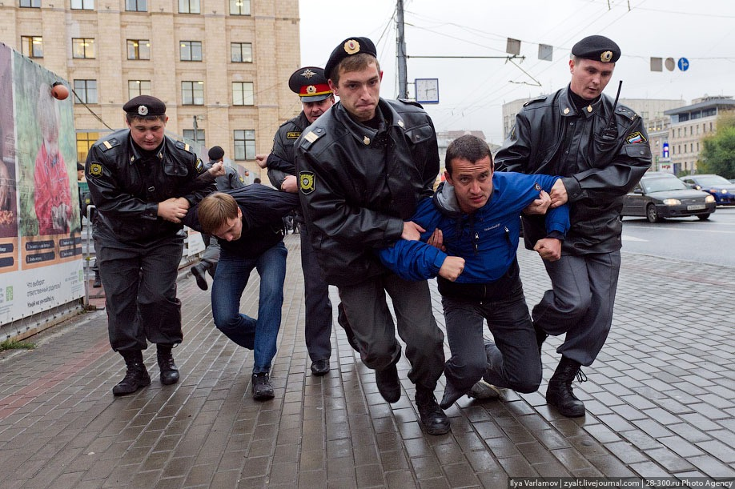

При общении с сотрудником полиции необходимо знать, что главным принципом (правовым фундаментом) полиции
является
лозунг
- СЛУЖИМ РОССИИ, СЛУЖИМ ЗАКОНУ!
Основным законом России является Конституция РФ.
В соответствии со статьей 2 Конституции РФ - человек, его права и свободы являются высшей ценностью. Признание,
соблюдение и защита прав и свобод человека и гражданинаявляется обязанностью государства.
В силу этого каждый должен помнить, что деятельность сотрудников полиции (как должностных лиц государства) в
первую
очередь по закону должна быть направлена на признание, соблюдение и защиту прав каждого человека (гражданина).
В соответствии с пунктом 2 статьи 13 Федерального закона РФ «О полиции», полиция вправе: «проверять
документы,
удостоверяющие личность граждан в случаях»:
- если имеются данные (совершение преступления на глазах сотрудника, заявление потерпевшего, письменная
ориентировка о
розыске, указание потерпевшего на лицо совершившее преступление), дающие основанияподозреватьихв совершении
преступления
или полагать, что они находятся в розыске;
- если имеется повод (совершение правонарушения на глазах сотрудника, утверждение лица о совершении
административного
правонарушения) к возбуждению в отношении этих граждан дела об административном правонарушении;
- Если имеются основания:
- Когда это лицо застигнуто при совершении преступления или непосредственно после
его
совершения;
- Когда потерпевшие или очевидцы укажут на данное лицо как на совершившее преступление;
- Когда на
этом
лице или его одежде, при нем или в его жилище будут обнаружены явные следы преступления) для их
задержания в
случаях,
предусмотренных федеральным законом.
Согласно пункту 13 статьи 13 Федерального закона РФ «О полиции» сотрудник полиции вправе доставлять
граждан, то
есть
осуществлять их принудительное препровождение, в служебное помещение территориального органа или
подразделения
полиции:
- в целях решения вопроса о задержании гражданина (при невозможности решения данного вопроса на месте);
- установления
личности гражданина, если имеются основания полагать, что он находится в розыске как скрывшийся от органов
дознания,
следствия или суда, либо как уклоняющийся от исполнения уголовного наказания, либо как пропавший без вести;
- защиты
гражданина от непосредственной угрозы его жизни и здоровью в случае, если он не способен позаботиться о себе
либо
если
опасности невозможно избежать иным способом.
В силу пункта 16 статьи 13 Федерального закона РФ «О полиции» сотрудник полиции вправеосуществлять в порядке,
установленном законодательством об административных правонарушениях, личный досмотр граждан, досмотр
находящихся
при них вещей, а также досмотр их транспортных средствпри наличии данных (заявление, ориентировка) о том, что
эти
граждане имеют при себе оружие, боеприпасы, патроны к оружию, взрывчатые вещества, взрывные устройства,
наркотические средства, психотропные вещества или их прекурсоры либо ядовитые или радиоактивные вещества,
изымать
указанные предметы, средства и вещества при отсутствии законных оснований для их ношения или хранения;
принимать участие в досмотре пассажиров, их ручной клади и багажа на железнодорожном, водном или воздушном
транспорте,
метрополитене либо осуществлять такой досмотр самостоятельно в целях изъятия вещей и предметов, запрещенных для
перевозки транспортными средствами.
Необходимо отметить, что отсутствие у сотрудника полиции вышеперечисленных законных оснований для совершения в
отношении гражданина каких-либо действий (задержание, проверка документов, досмотр, получения объяснений)
приравнивает сотрудника полиции к преступнику.
В связи с этим при обращении к гражданину сотрудник полиции в первую очередь оценивает гражданина на его
уровень
мышления и правовой осведомленности. В случае если сотрудник полиции придет к выводу о том, что гражданин
юридически осведомлен (грамотен), то совершение сотрудником полиции действий без наличия вышеуказанных законных
оснований будет затруднено или вообще не возможно.
Таким образом, если при общении с сотрудником полиции гражданином будут выполнены следующие действия, то можно
смело утверждать, что ни один сотрудник не сможет на гражданине «защелкнуть наручники» или действия сотрудников
могут быть признаны незаконными и необоснованными.
В данной статье разберем две ситуации, при первой сотрудники полиции чисто случайно на улице подходят к идущему
(стоящему) гражданину и просят предъявить документы, во втором случае сотрудники задержали гражданина с
запрещёнными вещами.
Ваши действия в первой ситуации:
- При любой ситуации необходимо проявлять СПОКОЙСТВИЕ (для этого можно сделать несколько незаметных для
окружающих глубоких вдохов и выдохов), УВЕРЕННОСТЬ (осанка прямая, речь четкая) и НЕПРИНУЖДЕННОСТЬ (общение
на
равных без страха и волнения).
- Разговаривать с сотрудниками полиции всегда необходимо УВЕРЕННО, ВЕЖЛИВО и НЕПРИНУЖДЕННО в противном случае
гражданин рискует преждевременно оказаться в «УАЗИКЕ ППС».
- В соответствии с частью 4 статьи 5 Федерального закона РФ «О полиции»при обращении к гражданину сотрудник
полицииобязанназвать свои должность, звание, фамилию, предъявить по требованию гражданина служебное
удостоверение,
после чего сообщить причину и цель обращения к гражданину.
- На основании указанной правовой нормы ВЕЖЛИВО и УВЕРЕННО попросите сотрудника полиции предъявить служебное
удостоверение и объяснить причину и основание моего задержания.
- Может последовать ответ, что он вас еще не задерживает, тогда сообщите ему, что задержание может быть
процессуальным и фактическим. Поскольку вы обратились ко мне, то я не имею возможности двигаться в
намеченном
маршруте, а значит временно фактически задержан.
- Помните, что уверенная, вежливая и непринужденная форма разговора с сотрудником полиции усыпит его
бдительность, в связи с чем, у гражданина может появиться возможность для дальнейших действий.
- Применение дальнейших действий должно исходить из обстоятельств ситуации и из разговора с сотрудником
полиции.
Вам необходимо заранее прогнозировать дальнейшие действия сотрудника.
- Вы можете придумать легенду к примеру, о том, что вы являетесь студентом юридического факультета и совсем
скоро
вы будете с ним коллегами и лбами встречаться в одном отделе полиции. При этом вы можете сообщить, что с
вами в
одной группе учится ваш друг Павел у которого отец полковник, начальник отдела собственной безопасности всей
полиции нашей области (в зависимости от вашего местонахождения, к примеру в Тамбовской области начальник
собственной безопасности полиции – полковник Киреев Александр Александрович, в Орловской области – полковник
Павлов Иван Николаевич, в Воронежской области – полковник Травин Кирилл Владимирович, в Липецкой области –
полковник Герман Александр Иванович), которого вы также знаете очень хорошо и сейчас можете позвонить ему и
сообщить про незаконные действия сотрудников полиции. Или к примеру, вы можете сообщить, что начальник
собственной
безопасности ГУ МВД России по нашей области является вашим соседом с которым вы очень часто общаетесь и
сейчас вы
можете ему позвонить и сообщить о незаконных действий сотрудников полиции. Для большей убедительности можете
достать телефон и сделать вид, что вы ищите номер, чтобы позвонить.
- При этом сообщите, что вы принципиальны в своих решениях и не желаете, что бы нарушался закон, поскольку
считаете, что вы не преступник и залазить в мои карманы нет законных оснований и необходимости.
- Если вышеперечисленные способы общения с сотрудником полиции не дали нужного вам результата, то знайте, что
в
ваши карманы они все равно залезут, поскольку при общении вы не были достаточно уверенным и спокойным, а
также
убедительным.
- В такой ситуации если у вас имеются запрещенные вещи вам остается лишь одно – «Ноги в руки и бежать!».
Бежать
нужно даже если ваши документы находятся у сотрудников!!! Любые документы можно восстановить, для этого на
следующий день вы можете обратиться в полицию и заявить, что документы вами утеряны. Вам выдадут
постановление об
отказе в возбуждении уголовного дела, которое вы предъявите в тот орган, который вам выдавал документы,
оставленные ранее у сотрудников.
- Не волнуйтесь за документы, волнуйтесь за свою свободу!!!
- Помните, что бежать необходимо не по прямой, а петлять забегая за не просматриваемые углы зданий или
помещений
(при возможности перепрыгивать через заборы) и избавляться от запрещенных вещей (скидывать их в глубокие
ямы,
люки, канализации, подвалы), таким образом, что бы преследующие вас этого не увидели.
- Ваша цель не убежать, а скрытно избавиться от ненужных вещей!
- Бежать необходимо как можно дальше от этого места!
- Вы должны быть готовы к тому, что преследующие вас догонят или прибудут к вам по месту жительства.
- Если вас догнали (но уже без вещей!!!) вы должны быть ВЕЖЛИВЫМИ, сказать, что испугались, так как
поссорились
с подругой (другом) и думали, что она (он) на вас заявил в полицию. Не конкретизируйте с кем, скажите если
он
(она) заявила, значит в полиции на вас имеется заявление, в противном случае задержание незаконно.
- Никогда не грубите сотрудникам полиции, даже если они к вам грубы, они просто вас провоцируют.
- Если выяснится что вы не студент, или ваша легенда не реальна (начальник не ваш сосед, вы узнали о нем на
официальном сайте ГУ МВД России по вашей области в разделе руководство) заявите им, что вы – фантазер, а
фантазеров у нас не сажают.
- Помните, лучше выглядеть психом, чем лишиться свободы!
- Если вещи вами были скинуты незаметно для окружающих, значит вас после того как досмотрят, отпустят, так
как
оснований для вашего длительного задержания не имеется.
- Никогда не возвращайтесь в этот день на место происшествия, поскольку за вами может быть «хвост» или это
место
будет тщательно патрулироваться сотрудниками полиции!!!

При второй ситуации (сотрудники задержали гражданина с запрещенными вещами) ваши действия могут быть менее
активными, поскольку запрещенные вещи у вас обнаружены, и вы задержаны.
При такой ситуации следует ожидать, что гражданина поместят под стражу.
Но необходимо учитывать, что все сказанное гражданином поспешно (необдуманно), может быть использовано против
него
и повлияет на срок наказания!!!
Поэтому в данной ситуации, гражданин должен воспользоваться положением статьи 51 Конституции РФ«никто не обязан
свидетельствовать против себя самого, своего супруга и близких родственников», то есть не давать ни каких
объяснений,
показаний и не подписывать никаких документов (необходимо молчать, заявить, что это не ваше, а сейчас вы
находитесь в
стрессовом состоянии и ничего говорить, и подписывать не будете), до приезда вашего близкого родственника
(отец,
мать,
брат, сестра, бабушка, дедушка, супруг, супруга).
Попросите сотрудников сообщить о произошедшем вашим
близким.Помните,
что, даже в присутствии своих близких, вы должны молчать, относительно случившегося события и ничего не
подписывать. В
такой ситуации даже ваши близкие не смогут дать вам дельного совета, поэтому они необходимы вам лишь для того,
чтобы
нанять вам грамотного адвоката по уголовным делам.>
Очень часто сотрудники полиции предоставляют задержанным бесплатных адвокатов. Такие адвокаты не будут защищать
вас, их
цель побыстрее разговорить вас и вынудить дать показания необходимые следователю для того, чтобы посадить вас
на
долго.
При этом они идут на различные хитрости, начинают прикидываться друзьями, говорить, что понимают вас утверждая,
что
чистосердечное раскаяние или сделка со следствием (просят рассказать о своих подельниках, способах совершения
преступления, количество совершенных преступлений) уменьшит срок вашего наказания или освободит от него.
Необходимо помнить, что подобные «рассказы» сотрудников и их адвокатов ведутся лишь для того, чтобы облегчить
работу
следствия по сбору неопровержимых доказательств вашей виновности по уголовному делу.
Вы вправе отказаться от адвоката, предоставленного правоохранительными органами вам бесплатно!!!
Необходимо помнить, что если гражданин задержан и находится в следственном изоляторе и не дает никаких
показаний,
то в
камере по заданию сотрудников к нему будут подосланы стукачи, которые будут дружески расспрашивать о
случившемся,
а
потом они же будут выступать в качестве свидетелей в суде, утверждающие о вашей виновности во вменяемом
преступлении.
Никогда не доверяйте таким лицам!!! Поэтому при общении с такими необходимо утверждать, что ничего не совершали
и
находитесь здесь незаконно.
На вас также может быть осуществлено различное давление со стороны сотрудников, будьте к этому готовы.
Наберитесь
терпения, помните, что лучше помучаться 6 месяцев, чем потом находиться в заперти в тюрьме - 8 лет.
И самое главное, если в ходе задержания или следствия вами ничего не будет сказано и подписано без участия
вашего
адвоката, то грамотный адвокат нанятый вашими близкими сможет развалить уголовное дело и отсечь вменяемую вам
виновность.
Необходимо помнить, что данная статья ни при какой ситуации не должна попасть в руки сотрудников из ваших
карманах, в
противном случае им будет известно о вашей тактике и ее применение будет затруднено.